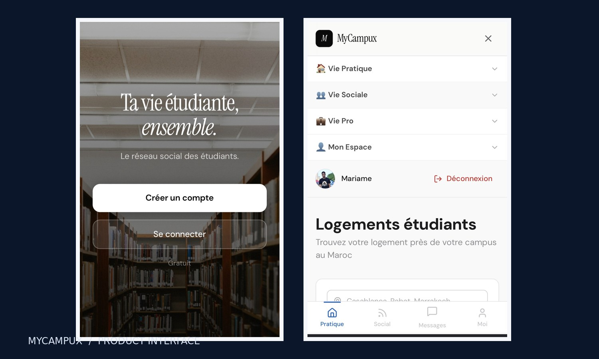

CAPTURES RÉELLES DU PRODUIT01MyCampux
Fondateur et développeur full-stack d'un écosystème numérique pour la vie étudiante : communauté, logement, mobilité, marketplace, événements et opportunités. Développé avec React, Laravel/PHP et MySQL, avec des fonctionnalités d'IA et un déploiement Linux. Projet testé par des utilisateurs et présélectionné à la première phase de Boost Up Lab Rabat (Technopark).